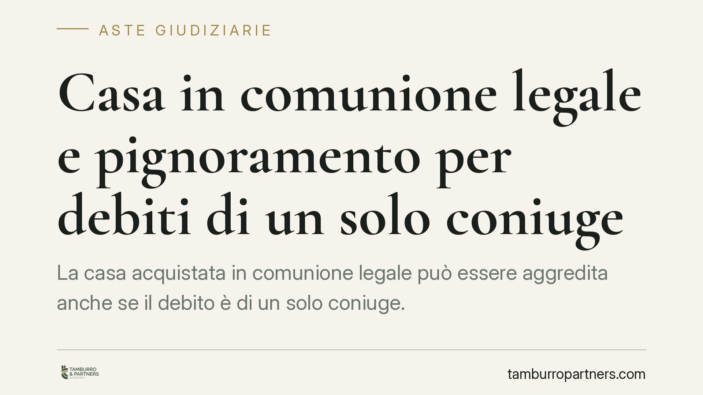

Casa in comunione legale e pignoramento per debiti di un solo coniuge
La casa acquistata in comunione legale può essere aggredita anche se il debito è di un solo coniuge. La comunione è un patrimonio unitario, senza quote: questo incide sulle modalità del pignoramento, sui limiti di responsabilità dei beni comuni e sulle tutele del coniuge estraneo al debito. Ecco cosa dice la legge e cosa fare in concreto.

Il punto di partenza: la comunione legale è senza quote
Quando due coniugi acquistano un immobile in regime di comunione legale, quel bene non appartiene per metà a ciascuno. Appartiene a entrambi in forma unitaria: è la cosiddetta comunione senza quote.
La differenza non è teorica. In una normale comproprietà (comunione ordinaria) ogni titolare ha una quota ideale che può vendere o su cui può iscriversi un pignoramento. Nella comunione legale, invece, finché il regime dura non esistono quote disponibili: c'è un patrimonio comune che risponde secondo regole proprie.
Questa impostazione è pacifica in giurisprudenza. Il riferimento storico è Cassazione, Sezioni Unite, n. 4933/1996, che ha inquadrato la comunione legale come comunione senza quote; l'orientamento è stato successivamente confermato dalle sezioni semplici. *(Verificare gli estremi della pronuncia più recente e pertinente al caso concreto.)*
Inquadramento normativo: debiti personali e debiti della famiglia
Occorre distinguere due situazioni.
Debiti contratti nell'interesse della famiglia. Per queste obbligazioni (artt. 186 e 190 c.c.) i beni della comunione rispondono in via diretta. Il creditore aggredisce l'immobile comune senza particolari limiti.
Debiti personali di un solo coniuge, cioè obbligazioni non contratte nell'interesse della famiglia. Qui interviene l'art. 189 c.c.: i beni della comunione rispondono verso il creditore particolare del singolo coniuge in via sussidiaria e fino al valore corrispondente alla quota del coniuge obbligato.
Attenzione: l'art. 189 c.c. non introduce un vero e proprio *beneficio di escussione* come quello della fideiussione (art. 1944 c.c.). Parla di responsabilità sussidiaria: il creditore particolare può soddisfarsi sui beni comuni solo dopo aver escusso i beni personali del debitore e comunque nel limite del valore corrispondente alla sua quota.
Come si pignora un bene senza quote
Proprio perché la quota non è materialmente separabile, il creditore particolare non può pignorare "metà casa". La prassi consolidata è il pignoramento dell'intero immobile, con successiva soddisfazione del creditore nei limiti di legge e riconoscimento al coniuge non debitore del valore che gli spetta sul ricavato.
In sostanza: si aggredisce il bene per intero, ma il creditore non incassa tutto. Il coniuge estraneo al debito conserva la propria posizione economica sul ricavato della vendita.
Implicazioni pratiche per il coniuge non debitore
Il coniuge estraneo al debito non è un semplice spettatore. Deve ricevere regolare notifica degli atti esecutivi e può proporre opposizione, ad esempio contestando la natura personale del debito, l'assenza dei presupposti dell'art. 189 c.c. o la corretta quantificazione del limite di responsabilità.
Un punto spesso sottovalutato riguarda la separazione dei beni tardiva. Cambiare regime patrimoniale dopo che il pignoramento è già stato trascritto non protegge l'immobile. L'art. 2913 c.c. rende inefficaci nei confronti del creditore pignorante gli atti di disposizione del bene compiuti dopo il pignoramento. La separazione decisa "all'ultimo minuto", quindi, non sottrae la casa all'esecuzione già avviata.
Il punto di vista di chi acquista in asta
Chi partecipa a un'asta giudiziaria su un bene in comunione legale deve verificare che il contraddittorio con il coniuge non debitore sia stato correttamente instaurato.
Se la notifica al coniuge estraneo al debito è stata regolare e non vi sono opposizioni accolte, l'aggiudicatario acquista l'immobile per intero. Ma la regolarità della procedura non va data per scontata: un vizio nella notifica o un'opposizione pendente possono incidere sull'acquisto. Prima di formulare un'offerta è essenziale esaminare gli atti della procedura.
Cosa fare in concreto
- Verifica il regime patrimoniale e la natura del debito: personale o contratto nell'interesse della famiglia. Da questo dipende tutto.
- Se sei il coniuge non debitore, controlla la regolarità della notifica degli atti esecutivi e valuta subito l'opposizione: i termini sono brevi.
- Non affidarti alla separazione dei beni tardiva per salvare la casa: dopo il pignoramento è inefficace verso il creditore (art. 2913 c.c.).
- Se acquisti in asta, esamina il fascicolo della procedura e accertati che il contraddittorio col coniuge estraneo sia stato correttamente instaurato.
- In ogni caso, fai analizzare la posizione da un legale prima di agire: i limiti di responsabilità ex art. 189 c.c. richiedono una valutazione caso per caso.
---
Contributo informativo a cura di Tamburro & Partners - Avv. Giuseppe Tamburro. Non costituisce parere legale.
Comprare bene all’asta si può.
Se vuoi acquistare un immobile all’asta in sicurezza o difendere un esecutato, scrivi allo studio. Ti rispondiamo entro un giorno lavorativo.